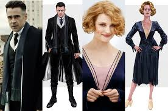
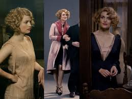

Daniel Radcliffe, quien diera vida a Harry Potter, confesó que está celoso de Eddie Redmayne, quien interpreta a Newt Scamander. No por el protagónico, sino por el vestuario. “Oh, que te j*dan, Eddie, en tu maravilloso traje. Yo he tenido que vestirme con jeans y sudaderas con cierre diez años, y tú ya tienes un abrigo maravilloso” bromeó el actor de Harry Potter en una entrevista con NME.
No es para menos. La encargada del vestuario para el filme es Colleen Atwood, quien ha trabajado en películas como Alice in Wonderland, Chicago, Lemony Snicket’s a serie of unfortunate events, Big fish, Memorias de una geisha, Edward Scissorhands, entre muchas otras. Ha sido nominada 10 veces al Oscar por mejor vestuario, de las cuales ha ganado 3.
En esta ocasión, Atwood logró unir dos de sus grandes especialidades: vestuarios para mundos fantásticos y vestuarios de época. Fantastic Beasts and where to find them se desarrolla casi 70 años antes que la historia del niño que sobrevivió y se lleva a cabo en otro continente, específicamente Norteamérica, Nueva York, 1926.

La moda revela las ideas de una época, la forma en que la sociedad se desenvuelve en un momento específico. La década de los 20 fue relevante. Después de la Primera Guerra Mundial, las sociedades evolucionaron. Las mujeres comenzaban a integrarse al campo laboral. La ropa que usaban era holgada, de manera que trazara una silueta andrógina: rasgos corporales ambiguos, que no se corresponden con los propios de su verdadero sexo. Las faldas comenzaron a ser más cortas. El corte de cabello de moda era el bob con ondas ligeras. Eran comunes los sombreros y turbantes. Los vestidos de día eran de telas ligeras, que permitieran que las mujeres se movieran libremente. Después de todo, acababan de renunciar al corsé. Apenas algunas comenzaban a usar pantalones, pero solo las más arriesgadas… todo gracias a Coco Chanel.
Volviendo al vestuario de Fantastic Beasts, puedo decir que las hermanas Goldstein, la ex-auror Tina y Queenie trabajadora del Ministro de Magia gringo, son las mejores portadoras de la moda de los 20. Las prendas, los colores de éstas, e incluso el corte de cabello, van acorde a los gustos de la época, además cada una representa a los dos tipos de mujer joven que existían. Por un lado, Queenie muy femenina, por otro Porpentina como una de las mujeres que se integraba a la fuerza laboral y luchaba por desempeñar un papel cada vez más importante; es decir, la locura y la sobriedad de la época.
Queenie usa vestidos holgados con escotes profundos en V. Este aspecto hace que un vestido que marca una silueta andrógina, rescate un rasgo tan femenino como el escote. Ella viste de rosa, este color se usa para representar las cosas femeninas. Simboliza cariño, amor y maternidad. Incluso hace que las personas se sientan emocionalmente mejor.
Las telas que usa Queenie son un tanto vaporosas. La solapa y los puños de su abrigo son de terciopelo y el corte marca un poco su cintura. En este punto, vemos el estilo de Colleen Atwood, pues Velma Kelly lleva un abrigo muy similar en Chicago, película en la que trabajó. Sólo que la asesina más famosa lleva en la solapa una textura más llamativa, algo parecido a piel; sin embargo, Tina no puede llevar algo así, se supone que su vida es más recatada. Una simple tela habla de la vida que llevan las personas. Hay de coquetas a coquetas.
Lo más destacable y simbólico del vestuario de Tina es que usa pantalón. Los pantalones y colores oscuros que lleva la hermana mayor son sinónimo de masculinidad. Sobre todo en una época donde recientemente habían dejado de llevar corsé. En aquellos años, solo las mujeres empoderadas llevaban un pantalón, lo cual nos habla mucho de la personalidad del personaje. Los tejidos de su ropa son mucho más ásperos, salvo un abrigo de completo terciopelo. Su sombrero casi siempre tapa su cabello, uno de los iconos de la feminidad más importantes en la cultura occidental.

El joven Newt Scamander no se queda atrás. Para representar a un joven idealista, creativo e incluso un poco infantil, los colores hablan mucho por sí solos. Si bien, los demás personajes masculinos visten en tonos grises, él lleva azul, amarillo, café y oliva. El color azul está asociado a la fantasía y a las ideas utópicas, además se asocia con la masculinidad, la concentración, lo deportivo, el conocimiento. El color amarillo simboliza la felicidad y alegría. ¿No suena a rasgos del personaje?
Como lo dijo Daniel, su abrigo es maravilloso, de lana. Muy inglés. Además, no lleva unos zapatos tipo Oxford, sino botas. Su peinado deja que sus rizos bailen libremente. Nada de fijador.
El vestuario de esta cinta es simplemente mágico. Colleen Atwood, hizo un excelente trabajo. La moda es cohesión y diferenciación. Puede asociarse con una sociedad, pero también debe resaltar tus rasgos particulares. Nunca subestimes el poder del vestuario de una película, es más importante de lo que pensabas. Debe ser un trabajo muy bien planeado, porque habla mucho de quien lo lleva puesto. Aunque es algo que puede tener un efecto mágico, no es nada que se pueda hacer con un simple hechizo.